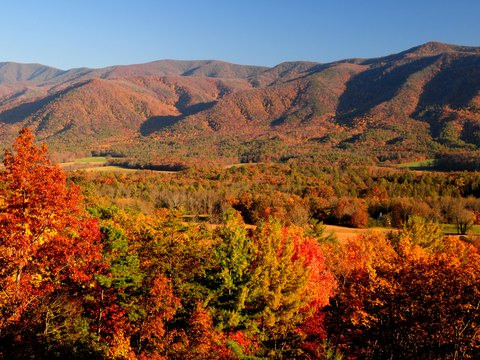
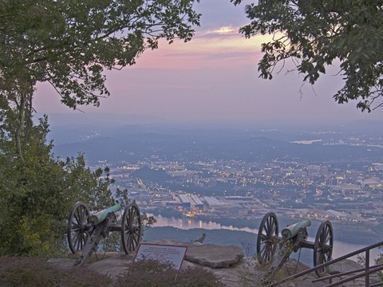

Family fly-ins
15 fly-in weekends built around the kids: theme parks, beaches and real rockets, each with the airport facts a pilot parent needs.
Every guide has a Best for kids box with the best ages, the top three things to do and any airport limits. On the home page, switch on Traveling with kids to see all of our family-friendly guides.
Theme parks
Rides, characters and a park day the kids will talk about for months.
 California · KCRQCarlsbad & LEGOLANDLEGOLAND and Miniland USABest ages 3 to 12 · Year-round✈ Landing fee; morning marine layer
California · KCRQCarlsbad & LEGOLANDLEGOLAND and Miniland USABest ages 3 to 12 · Year-round✈ Landing fee; morning marine layer
Tennessee · KGKTGreat Smoky MountainsDollywoodBest ages 4 to 12 · Spring to fall✈ Mountain terrain; approaches to runway 10 only Pennsylvania · KCXYHersheyHersheypark and the chocolate tour rideBest ages 3 to 12 · Spring to fall
Pennsylvania · KCXYHersheyHersheypark and the chocolate tour rideBest ages 3 to 12 · Spring to fall Missouri · KBBGBranson & Table Rock LakeSilver Dollar CityBest ages 4 to 12 · Spring to fall
Missouri · KBBGBranson & Table Rock LakeSilver Dollar CityBest ages 4 to 12 · Spring to fall Virginia · KJGGWilliamsburg & JamestownBusch Gardens and Colonial WilliamsburgBest ages 5 to 12 · Spring to fall✈ Short 3,204 ft runway; circling approaches only
Virginia · KJGGWilliamsburg & JamestownBusch Gardens and Colonial WilliamsburgBest ages 5 to 12 · Spring to fall✈ Short 3,204 ft runway; circling approaches onlyBeach & water
Sand, waterparks and warm water, with very little to plan.
 Florida · KDTSDestinCalm, clear water and a dolphin cruiseBest ages 2 to 10 · Spring to fall✈ Eglin military airspace nearby
Florida · KDTSDestinCalm, clear water and a dolphin cruiseBest ages 2 to 10 · Spring to fall✈ Eglin military airspace nearby Wisconsin · KDLLWisconsin Dells & Devil’s LakeIndoor waterparks, rain or shineBest ages 3 to 12 · Year-round
Wisconsin · KDLLWisconsin Dells & Devil’s LakeIndoor waterparks, rain or shineBest ages 3 to 12 · Year-round Michigan · KTVCTraverse CityThe Dune Climb and freshwater beachesBest ages 4 to 12 · Summer✈ Landing fee
Michigan · KTVCTraverse CityThe Dune Climb and freshwater beachesBest ages 4 to 12 · Summer✈ Landing feeAdventure
Bikes, tide pools and mountain air.
 Michigan · KMCDMackinac IslandNo cars: bikes, carriages and a fortBest ages 3 to 12 · Summer✈ No fuel and no FBO; 3,501 ft runway
Michigan · KMCDMackinac IslandNo cars: bikes, carriages and a fortBest ages 3 to 12 · Summer✈ No fuel and no FBO; 3,501 ft runway Maine · KBHBBar Harbor & AcadiaTide pools and the carriage roadsBest ages 5 to 12 · Summer to early fall✈ Landing fee; summer fogColorado · KCOSColorado Springs & the BroadmoorThe zoo and a train to 14,115 ftBest ages 5 to 12 · Spring to fall✈ 6,187 ft field: high density altitude
Maine · KBHBBar Harbor & AcadiaTide pools and the carriage roadsBest ages 5 to 12 · Summer to early fall✈ Landing fee; summer fogColorado · KCOSColorado Springs & the BroadmoorThe zoo and a train to 14,115 ftBest ages 5 to 12 · Spring to fall✈ 6,187 ft field: high density altitudeExplore & learn
Rockets, aquariums and history they can touch.
 Florida · KTIXSpace Coast & Kennedy Space CenterKennedy Space Center and real rocketsBest ages 5 to 12 · Year-round✈ Launch flight restrictions: check TFRs
Florida · KTIXSpace Coast & Kennedy Space CenterKennedy Space Center and real rocketsBest ages 5 to 12 · Year-round✈ Launch flight restrictions: check TFRs
Tennessee · KCHAChattanoogaThe Tennessee AquariumBest ages 3 to 12 · Spring to fall California · KMRYMonterey & CarmelThe Monterey Bay Aquarium and sea ottersBest ages 3 to 12 · Year-round✈ Summer fog and low clouds
California · KMRYMonterey & CarmelThe Monterey Bay Aquarium and sea ottersBest ages 3 to 12 · Year-round✈ Summer fog and low clouds Texas · KSSFSan AntonioRiver Walk boats and the DoSeumBest ages 3 to 12 · Fall to spring
Texas · KSSFSan AntonioRiver Walk boats and the DoSeumBest ages 3 to 12 · Fall to springWant to fly in with other pilot families? We are gauging interest in WingAway family weekends at some of these destinations. Tell us which one.
Flight times are illustrative: straight-line distance at 150 KTAS plus 15 minutes. Airport notes are for planning; check the chart supplement, NOTAMs and your own minimums.